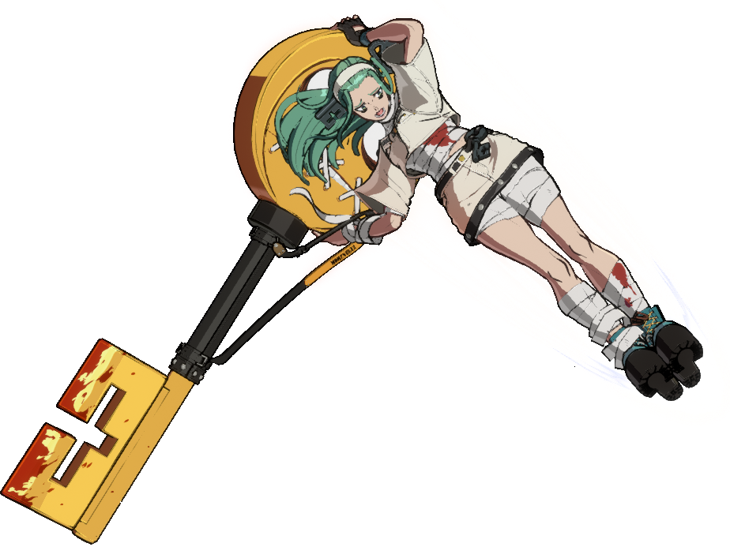
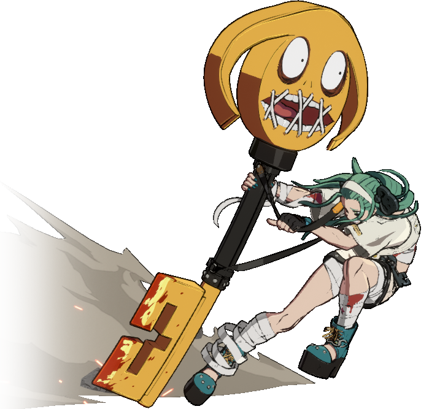
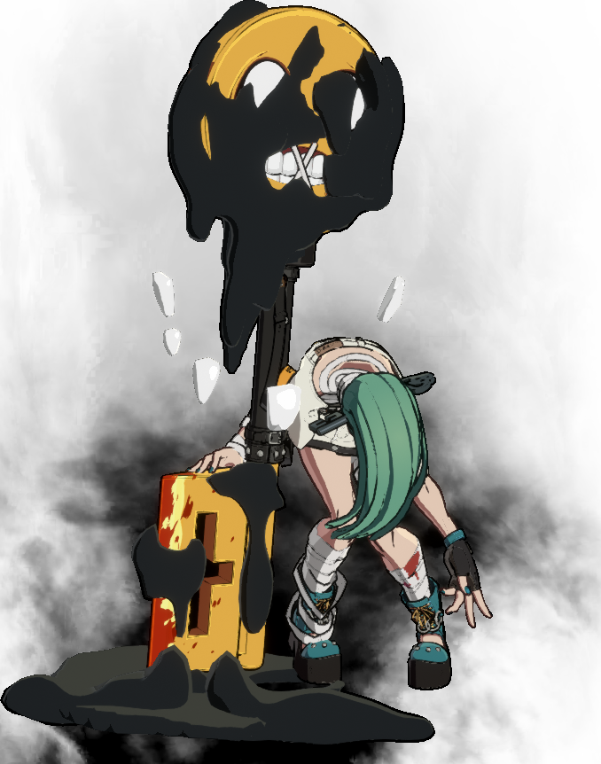
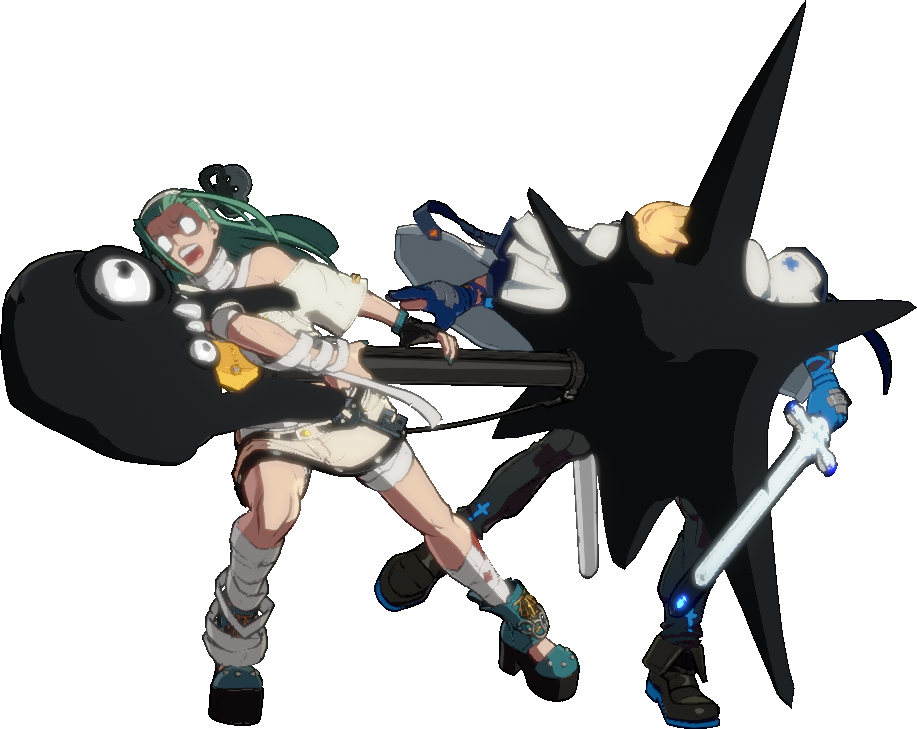
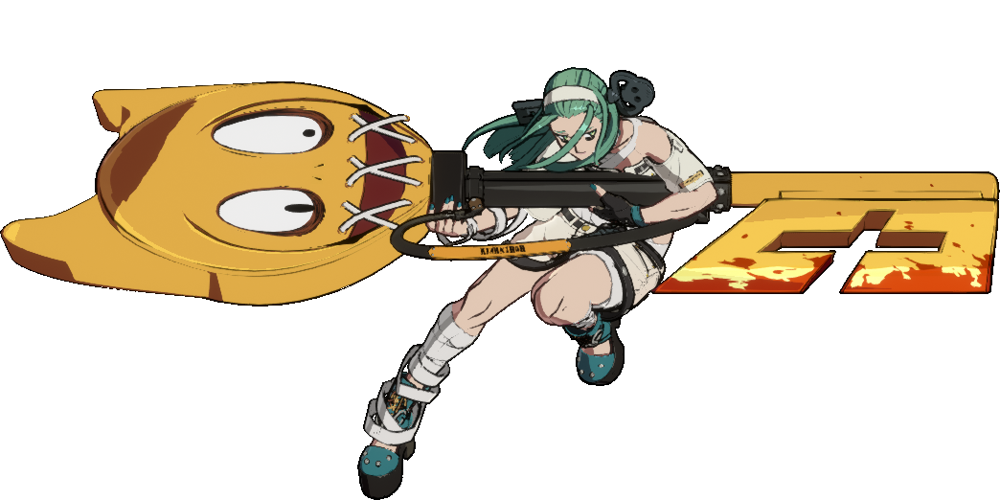
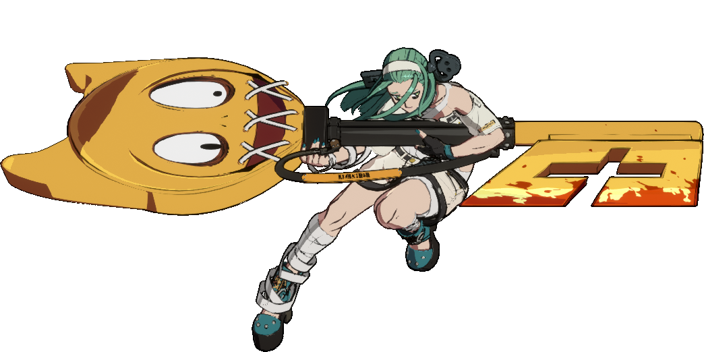
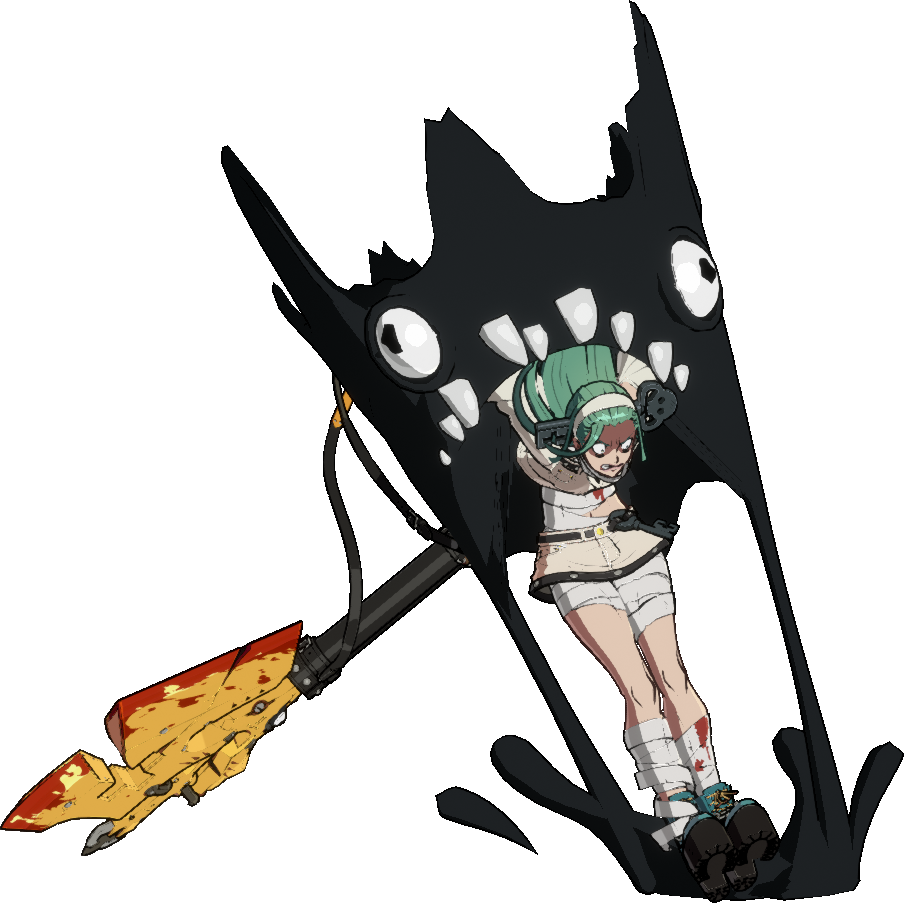
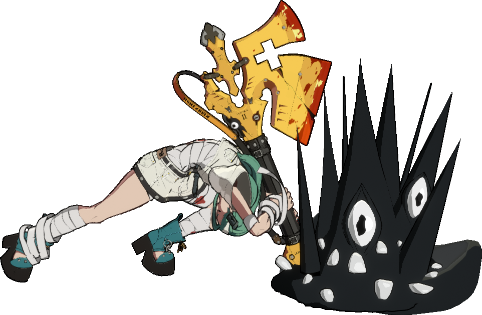

1. Einzigartige Mechaniken
A.B.A besitzt die Möglichkeit in einen Wutzustand (JR) zu wechseln,
der ihre Aktionen stark verbessert und sie zum mächtigsten Charakter
im Spiel macht.
Dafür gibt es einige Einschränkungen:
- Schwache Angriffe — A.B.A muss immer defensiv spielen, um eine Möglichkeit zu finden, in den Wutzustand zu wechseln.
-
Begrenzter Wutzustand — Je nach Füllung ihrer Leiste kann A.B.A
nur eine begrenzte Zeit im Wutzustand bleiben. Kann im
Normalzustand mit Angriffen wie
c.S
 gefüllt werden.
gefüllt werden.
- Langsame Geschwindigkeit — A.B.A bewegt sich im Normalzustand langsamer als andere Charaktere, wodurch sie auf 236K und 214K angewiesen ist, um sich zu bewegen, was sie anfällig für Konter macht.
Daraus ergibt sich ein Spielstil der darauf basiert nach jeder Combo
im Wutzustand, in den Normalzustand zu wechseln (JR 63214P
oder
JR 214H) was Ressourcen auffüllt, um danach rechtzeitig wieder in den
Wutzustand zu wechseln (63214P oder
214H). Sobald A.B.A im Wutzustand ist, erhält sie folgende Vorteile:
oder
214H). Sobald A.B.A im Wutzustand ist, erhält sie folgende Vorteile:
- Erhöhte Angriffskraft — Ihre Angriffe verursachen mehr Schaden.
- Trick-Optionen — Ihre Angriffe bekommen neue Eigenschaften, so werden JR 236K und JR 2H zum wichtigsten High/Low-Mixup.
- Schnellere Angriffe und Geschwindigkeit — Dadurch kann A.B.A, sobald sie im Wutzustand ist, immer den Gegner überwältigen und zwingen defensiv zu spielen.

Unten: Eifersuchts-Leiste im Wutzustand (nimmt mit der Zeit ab)